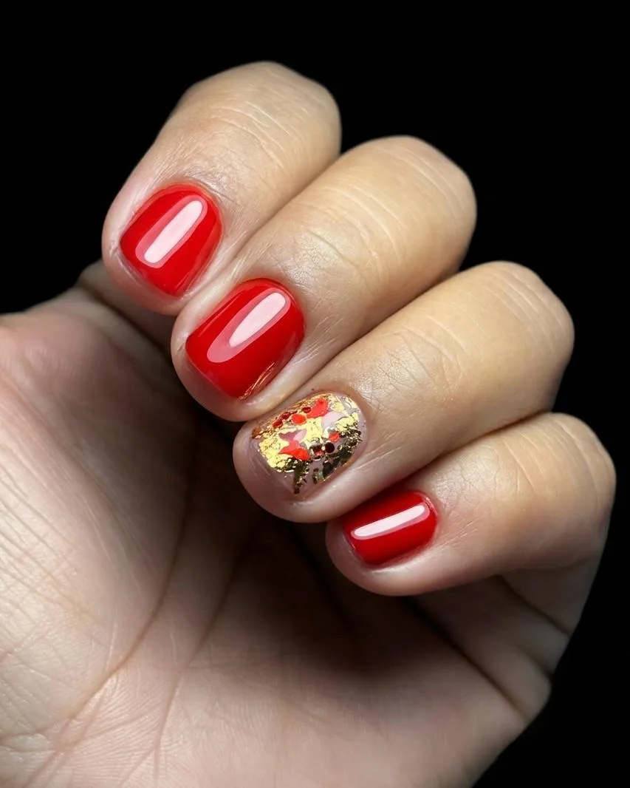

01
Bases y perfeccionamiento

Manicura rusa y esmaltado perfecto
Para comenzar o perfeccionar tu técnica, combinando anatomía y bioseguridad con práctica progresiva de torno, corte de cutícula y esmaltado.
Temario y qué incluye
Qué aprenderás
- Histología de la uña natural; anatomía de la mano y estructura ungueal.
- Bioseguridad, asepsia, desinfección y esterilización.
- Uso correcto del torno o drill: velocidades, fresas y aplicaciones.
- Corte de cutícula con tijera y preparación de la placa ungueal.
- Nivelación, esmaltado perfecto y diseños en tendencia.
- Fotografía para mostrar trabajos en redes sociales.
- Teoría y prácticas supervisadas con modelos reales.
Incluye
- ✓ Mandil de trabajo
- ✓ Gama de esmaltes
- ✓ Manual impreso
- ✓ Reconocimiento digital
- ✓ Coffee break